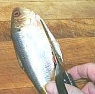

These three fish are all but indistinguishable one from another. They are highly commercial Indo-West Pacific fish found from the Persian Gulf to the South China Sea and the Java Sea, these fish can grow to over 23 inches inches (14 inches for kelee) but the Hilsa specimen in the photo was 10 inches and weighed 6 ounces. These shad are marketed fresh and dried and are not considered threatened. Farming Ilish / Hilsa is in the development stages in India (2012 - 2014). This is considered a very desirable fish in West Bengal and Bangladesh, and is the national fish of Bangladesh.
As of 2 July 2014, Ilish is in very short supply in West Bengal and is now priced out of reach for much of the population. The fish should have come in with the monsoon, but have not. Some are blaming this on El Niño. Due to a disagreement, Bangladesh has forbidden exports, so frozen fish is being imported from Burma at high cost.
More on Herring Family.
|

Cutting away the keel |
Cooking:In India this fish is very often cut into steaks 1/2 to 3/4 inch thick for cooking. Many Americans are not accustomed to dealing with very bony fish on the plate, so you may wish to consider fillets instead. In Bengal the head will often be fried crisp and served with rice.Cleaning:This fish has the tips of the ribs fused to a keel bone all along the bottom, so there's no entry point. I cut off a little less than 1/4" with kitchen shears all along the bottom, after which it can be opened and cleaned as shown in Cleaning and Filleting Fish.Fillet:Despite their small size these fish are easy to fillet - there's lots of bones to follow.Yield:A 5 oz fish will be just over 4 ounces cleaned and will yield 2 oz of fillet (40%).Skin:The skin shrinks quite a bit when cooked but is easy to remove. Actually, if you make a shallow cut along the top of the fish in preparation for filleting it, you can pry up the corner at the head end and then just peel the skin off the fish. Don't worry about the silver color left, it's not a problem.Stock:Herring heads and bones make a stock that still tastes strong and oily even after you've removed the substantial amount of oil. Not recommended.Subst:Particularly in eastern North America, there are Shad available that are similar in taste and characteristics to Hilsa shad. The large American Shad can be used but is more closely related to European shad. |